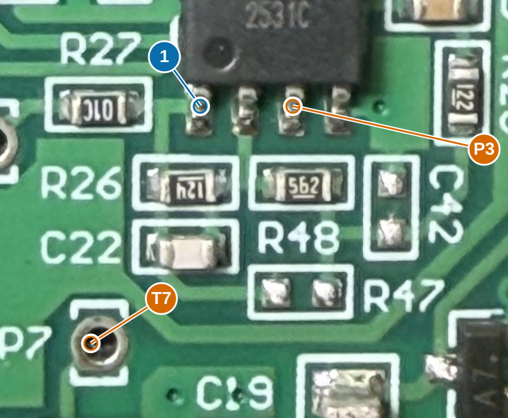

Battery, programmer and all external supplies disconnected. Check the board is discharged before selecting resistance mode. Leave every component fitted.
Only RX-3: U3 native pin3 to TP7, unpowered resistance. This new pair tests a possible relation to the established PIC-RA1/R28 node. Near-probe resistance supports direct membership; high/OL rejects it under good contact; intermediate or drifting readings do not identify a component. Do not subtract previous fitted readings.
Disconnect battery, programmer and all external power; check for residual voltage before resistance mode. Leave components fitted.
Place red on P3 (U3 pin3) and black on T7 (TP7). Pin1 marker is orientation only.
Report ohms or OL and whether the reading settles or drifts. The reported 1-ohm shorted-probe baseline is preserved.
RX-3: U3 pin3 to TP7; test a possible input/bias relationship

P3: U3 pin3: third lower metal lead from the pin1-dot end. RX-3 red probe.
T7: TP7 test hole above R28/R29. RX-3 black probe. Its existing connection to PIC RA1/R28 does not prove a U3 join.
ID
Red probe
Black probe
Condition
Reading
RX-3
P3
T7
Unpowered; resistance; all components fitted
Near the established 1-ohm probe baseline supports a direct U3.3-TP7 relation. High resistance/OL rejects direct membership with good contact, not every component-mediated path. Intermediate/drifting readings remain ambiguous. No 25-kohm resistor or C19-C20 join is inferred from earlier results.
Results to share
Nothing is sent automatically. Copy and paste into the chat, or download a text file.
What follows
Audit connection evidence and device qualifications - R39 and the D2/C20/R28 separation remain preserved. RX-1/RX-2 withdraw C19.1-U3.3 and C20.1-GND. Three isolated receiver destinations remain unknown, alongside six nets with selected-evidence gaps.
Recover critical component values - All 44 unknown ceramics have numerical design candidates, ratings and dielectrics: 12 supply, 17 signal/timing and 15 RF-bank seeds. Validation remains; no broad measurement batch is active.
Finish interface and package mapping - LED colour branches and J5 board-contact/output mapping are established. LED footprint, connector fit and external motor harness orientation remain reproduction qualifications.
ERC: 5 findings: one retained U6/U6A output conflict plus four visible findings for the three unresolved receiver endpoints. U6A is DNP; its regulator symbol remains by your request. No no-connect flag suppresses the receiver gaps.